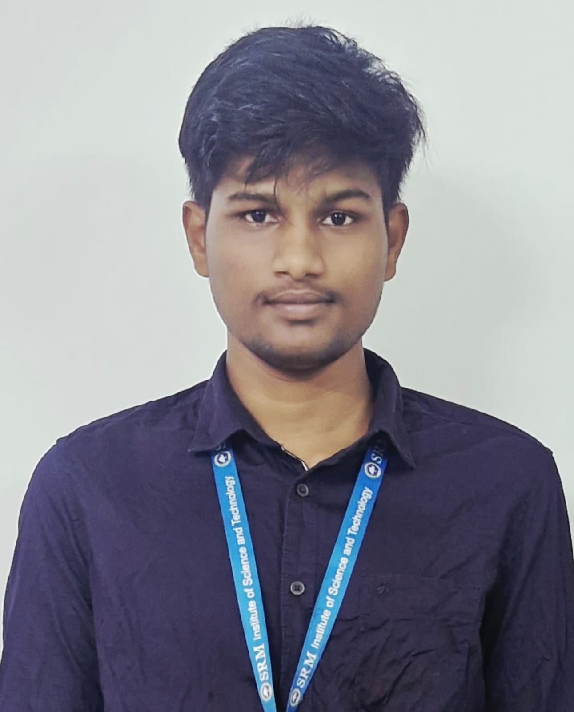

B.Tech. Computer Science with AI & ML | SRM University | Aspiring AI Innovator
CSE (AI & ML) undergraduate at SRM University with hands-on experience in Machine Learning, Python, and full-stack development. Skilled in building data pipelines, automation tools, and research-grade systems. Strong problem-solver with leadership experience.
I'm a Computer Science (AI & ML) undergraduate at SRM University with hands-on experience in Machine Learning, Python, and full-stack development. I build data pipelines, automation tools, and research-grade systems—from novel anomaly-detection algorithms to campus food ordering platforms and voice assistants. Passionate about research-driven innovation and committed to solving real-world problems through AI.
Bachelor of Engineering in Computer Science with AI & ML
Chennai, Tamil Nadu | Expected May 2027
Cumulative GPA: 8.0/10
Relevant Coursework: Artificial Intelligence & ML, DSA, DAA, Software Engineering,Data Analyst
AICTE EduSkills & Google for Developers
10 Weeks | 2024
Deloitte
May 2026
Python · Isolation Forest · DBSCAN · PCA · SMOTE
Developed HI-DBSF (Hybrid Isolation-DBSCAN Forest), a novel algorithm fusing global and local anomaly detection for automated dataset cleaning. Built a four-stage pipeline (Ingest, Assess, Clean, Drift Monitor) achieving a 29-point quality score improvement, 32% dataset size reduction, and 30% training time reduction.
HTML · CSS · JavaScript · MySQL
Developed a web-based food pre-ordering system enabling vendor selection, advance ordering, and real-time order status tracking. Designed a normalized database schema and implemented SQL triggers to automate order processing workflows.
Python · NLP · Speech Recognition
Built a voice-controlled assistant using Python to open applications, retrieve time/date information, and perform web searches via speech recognition and text-to-speech.
SRM Institute of Science and Technology
Spoken: Telugu · English · Tamil (basic)